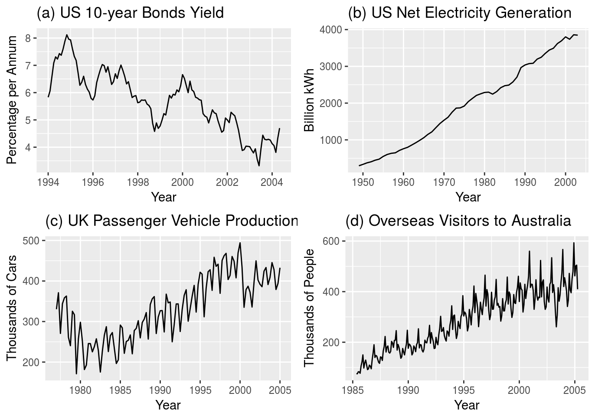
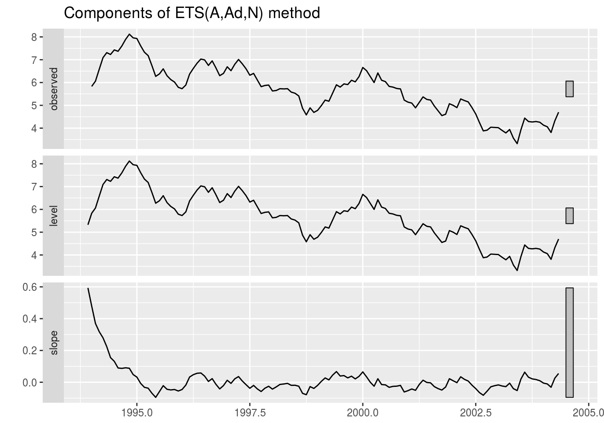
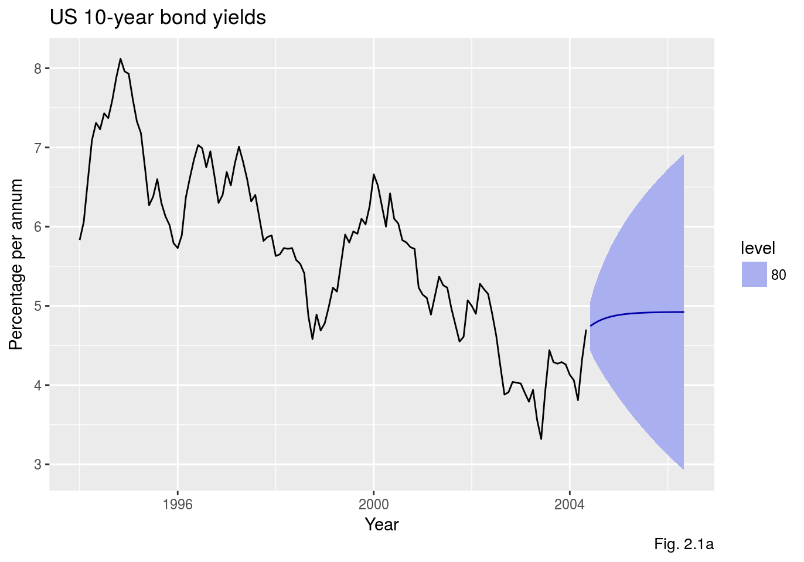
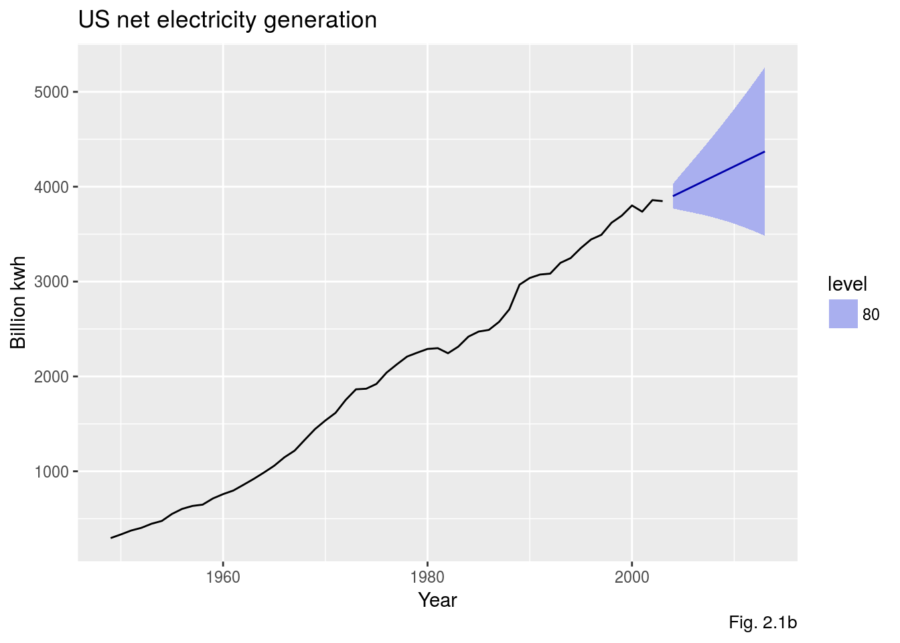
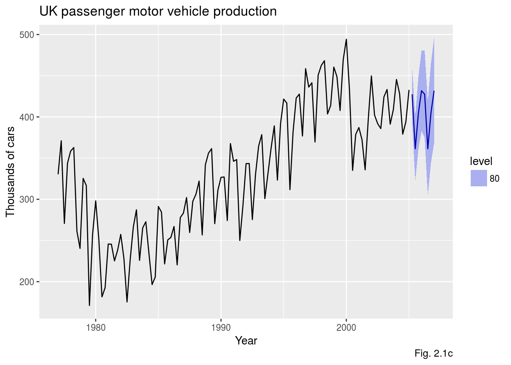
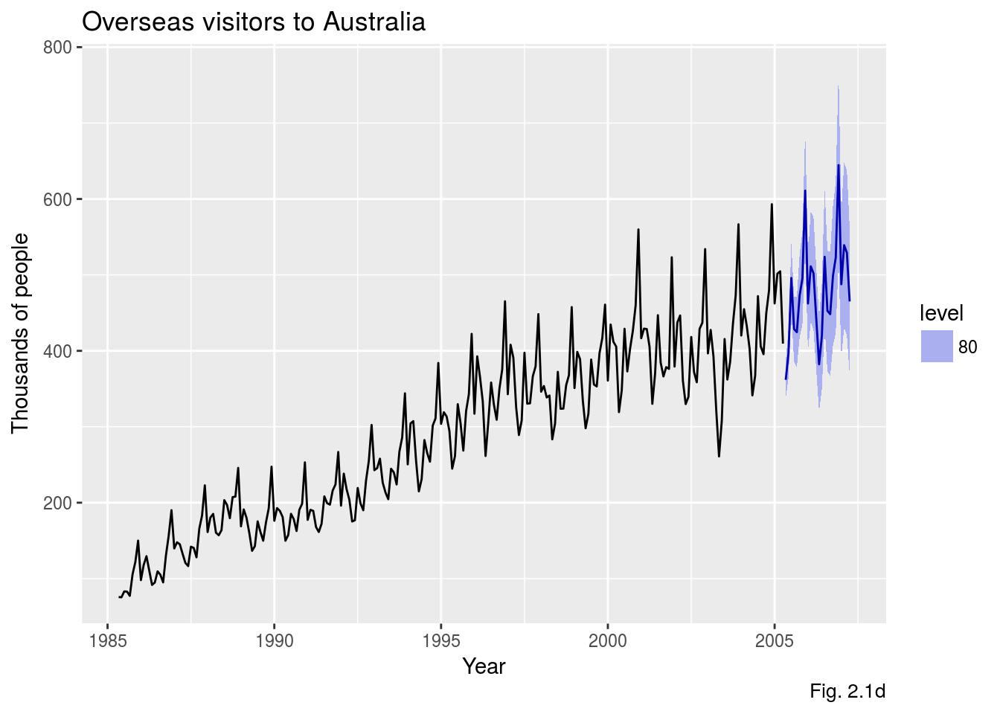

Using expsmooth: worked examples
Justin Carmody, Rob J Hyndman
2018-04-14
Source:vignettes/expsmooth-vignette.Rmd
Introduction
This package contains a collection of datasets that are designed to accompany the book “Forecasting with Exponential Smoothing: The State Space Approach” by Rob Hyndman, Anne B. Koehler, J. Keith Ord, and Ralph D. Snyder (Wiley, 3rd ed., 1998). The book can be purchased here.

When the expsmooth package is loaded, the forecast package is also loaded, providing the functions to fit and forecast with exponential smoothing state space models.
This vignette will replicate Section 2.8 from the book, and provide worked solutions to some of the exercises in Section 2.9. The forecast package has been updated since the book was published, and some of the resulting model estimates may be different from those in the book. Figure numbers are taken from the book.
Data sets
A graph of a time series often exhibits patterns, such as an upward or downward movement (trend) or a pattern that repeats (seasonal variation), that might be used to forecast future values. Chapters 1 and 2 reference four data sets that are included in the expsmooth package.
bonds 125 monthly US government bond yields (percent per annum) from January 1994 to May 2004.
usnetelec 55 observations of annual US net electricity generation (billion kwh) for 1949 through 2003.
ukcars 113 quarterly observations of passenger motor vehicle production in the UK (thousands of cars) for the first quarter of 1977 through the first quarter of 2005.
visitors 240 monthly observations of the number of short term overseas visitors to Australia from May 1985 to April 2005.
These time series are shown in Figure 1.1 which is reproduced below:
plot_bonds <- autoplot(bonds) +
ggtitle('(a) US 10-year Bonds Yield') +
xlab('Year') +
ylab('Percentage per Annum')
plot_usnetelec <- autoplot(usnetelec) +
ggtitle('(b) US Net Electricity Generation') +
xlab('Year') +
ylab('Billion kWh')
plot_ukcars <- autoplot(ukcars) +
ggtitle('(c) UK Passenger Vehicle Production') +
xlab('Year') +
ylab('Thousands of Cars')
plot_visitors <- autoplot(visitors) +
ggtitle('(d) Overseas Visitors to Australia') +
xlab('Year') +
ylab('Thousands of People')
gridExtra::grid.arrange(plot_bonds, plot_usnetelec, plot_ukcars, plot_visitors, nrow=2)
Model selection exercise
This part of the vignette will follow the methodology described in Section 2.8 of the book, and reproduce the results that are reported there. This also provides answers to Exercise 2.3 and Exercise 2.4.
The estimation and model selection are performed by the ets() function and the forecasting is done by the forecast() function. These are both a part of the forecast package. A basic introduction to using these functions is given in Section 7.6 and Section 7.7 of “Forecasting: Principles and Practice” by George Athanasopoulos and Rob J. Hyndman.
The automatic forecasting process will by carried out for each of the four data sets. The process will be explained for the first data set, and the relevant results will be reported for the others.
bonds
The ets() function is used to apply all appropriate models (optimising parameters in each case), and then it also selects the best model according to the AICc. The AICc is the default penalised likelihood, but others can be specified.
fit_bonds <- ets(bonds)
summary(fit_bonds)
#> ETS(A,Ad,N)
#>
#> Call:
#> ets(y = bonds)
#>
#> Smoothing parameters:
#> alpha = 0.9999
#> beta = 0.0954
#> phi = 0.8026
#>
#> Initial states:
#> l = 5.3252
#> b = 0.5934
#>
#> sigma: 0.2428
#>
#> AIC AICc BIC
#> 256.5383 257.2502 273.5082
#>
#> Training set error measures:
#> ME RMSE MAE MPE MAPE MASE
#> Training set -0.01622111 0.2378765 0.1969524 -0.3276314 3.611147 0.2440042
#> ACF1
#> Training set 0.1426552The autoplot() function can then be used to show the states over time.

The forecast() function is used to produce point forecasts and prediction intervals. When the summary() function is called on the forecast object, it prints the model information along with the point forecasts and prediction intervals.
forecast_bonds <- forecast(fit_bonds, level=80)
summary(forecast_bonds)
#>
#> Forecast method: ETS(A,Ad,N)
#>
#> Model Information:
#> ETS(A,Ad,N)
#>
#> Call:
#> ets(y = bonds)
#>
#> Smoothing parameters:
#> alpha = 0.9999
#> beta = 0.0954
#> phi = 0.8026
#>
#> Initial states:
#> l = 5.3252
#> b = 0.5934
#>
#> sigma: 0.2428
#>
#> AIC AICc BIC
#> 256.5383 257.2502 273.5082
#>
#> Error measures:
#> ME RMSE MAE MPE MAPE MASE
#> Training set -0.01622111 0.2378765 0.1969524 -0.3276314 3.611147 0.2440042
#> ACF1
#> Training set 0.1426552
#>
#> Forecasts:
#> Point Forecast Lo 80 Hi 80
#> Jun 2004 4.744090 4.432953 5.055227
#> Jul 2004 4.779505 4.322348 5.236661
#> Aug 2004 4.807928 4.229691 5.386165
#> Sep 2004 4.830740 4.144568 5.516913
#> Oct 2004 4.849049 4.063834 5.634264
#> Nov 2004 4.863744 3.986280 5.741207
#> Dec 2004 4.875537 3.911379 5.839695
#> Jan 2005 4.885002 3.838871 5.931134
#> Feb 2005 4.892599 3.768607 6.016591
#> Mar 2005 4.898696 3.700482 6.096910
#> Apr 2005 4.903589 3.634409 6.172770
#> May 2005 4.907517 3.570303 6.244731
#> Jun 2005 4.910669 3.508080 6.313258
#> Jul 2005 4.913199 3.447657 6.378740
#> Aug 2005 4.915229 3.388948 6.441510
#> Sep 2005 4.916859 3.331869 6.501848
#> Oct 2005 4.918166 3.276338 6.559995
#> Nov 2005 4.919216 3.222273 6.616159
#> Dec 2005 4.920058 3.169596 6.670521
#> Jan 2006 4.920735 3.118233 6.723236
#> Feb 2006 4.921277 3.068112 6.774442
#> Mar 2006 4.921713 3.019167 6.824258
#> Apr 2006 4.922062 2.971334 6.872791
#> May 2006 4.922343 2.924552 6.920134The autoplot() function can then be called on the forecast object to produce the graph shown in Figure 2.1.
autoplot(forecast_bonds) +
xlab('Year') +
ylab('Percentage per annum') +
ggtitle("US 10-year bond yields") +
labs(caption="Fig. 2.1a")
usnetelec
fit_usnetelec <- ets(usnetelec)
forecast_usnetelec <- forecast(fit_usnetelec, level=80)
summary(forecast_usnetelec)
#>
#> Forecast method: ETS(M,A,N)
#>
#> Model Information:
#> ETS(M,A,N)
#>
#> Call:
#> ets(y = usnetelec)
#>
#> Smoothing parameters:
#> alpha = 0.9999
#> beta = 0.2191
#>
#> Initial states:
#> l = 254.9338
#> b = 38.3125
#>
#> sigma: 0.0259
#>
#> AIC AICc BIC
#> 634.0437 635.2682 644.0803
#>
#> Error measures:
#> ME RMSE MAE MPE MAPE MASE
#> Training set 1.162583 52.00363 36.77721 0.2629582 1.942062 0.5211014
#> ACF1
#> Training set 0.006113498
#>
#> Forecasts:
#> Point Forecast Lo 80 Hi 80
#> 2004 3900.329 3770.801 4029.857
#> 2005 3952.650 3747.279 4158.022
#> 2006 4004.972 3725.589 4284.355
#> 2007 4057.293 3701.885 4412.701
#> 2008 4109.614 3674.968 4544.259
#> 2009 4161.935 3644.367 4679.503
#> 2010 4214.256 3609.881 4818.632
#> 2011 4266.577 3571.428 4961.726
#> 2012 4318.898 3528.985 5108.812
#> 2013 4371.220 3482.552 5259.888
autoplot(forecast_usnetelec) +
xlab('Year') +
ylab('Billion kwh') +
ggtitle("US net electricity generation") +
labs(caption="Fig. 2.1b")
ukcars
fit_ukcars <- ets(ukcars)
forecast_ukcars <- forecast(fit_ukcars, level=80)
summary(forecast_ukcars)
#>
#> Forecast method: ETS(A,N,A)
#>
#> Model Information:
#> ETS(A,N,A)
#>
#> Call:
#> ets(y = ukcars)
#>
#> Smoothing parameters:
#> alpha = 0.6199
#> gamma = 1e-04
#>
#> Initial states:
#> l = 314.2568
#> s=-1.7579 -44.9601 21.1956 25.5223
#>
#> sigma: 25.9302
#>
#> AIC AICc BIC
#> 1277.752 1278.819 1296.844
#>
#> Error measures:
#> ME RMSE MAE MPE MAPE MASE
#> Training set 1.313884 25.23244 20.17907 -0.1570979 6.629003 0.6576259
#> ACF1
#> Training set 0.02573334
#>
#> Forecasts:
#> Point Forecast Lo 80 Hi 80
#> 2005 Q2 427.4885 394.2576 460.7195
#> 2005 Q3 361.3329 322.2353 400.4305
#> 2005 Q4 404.5358 360.3437 448.7280
#> 2006 Q1 431.8154 383.0568 480.5741
#> 2006 Q2 427.4885 374.5571 480.4200
#> 2006 Q3 361.3329 304.5345 418.1313
#> 2006 Q4 404.5358 344.1174 464.9542
#> 2007 Q1 431.8154 367.9809 495.6500
autoplot(forecast_ukcars) +
xlab('Year') +
ylab('Thousands of cars') +
ggtitle("UK passenger motor vehicle production") +
labs(caption="Fig. 2.1c")
visitors
fit_visitors <- ets(visitors)
forecast_visitors <- forecast(fit_visitors, level=80)
summary(forecast_visitors)
#>
#> Forecast method: ETS(M,A,M)
#>
#> Model Information:
#> ETS(M,A,M)
#>
#> Call:
#> ets(y = visitors)
#>
#> Smoothing parameters:
#> alpha = 0.6146
#> beta = 2e-04
#> gamma = 0.192
#>
#> Initial states:
#> l = 92.9631
#> b = 2.2221
#> s=0.9378 1.0666 1.0669 0.9625 1.3768 1.113
#> 1.0012 0.8219 0.9317 1.0046 0.8755 0.8413
#>
#> sigma: 0.0536
#>
#> AIC AICc BIC
#> 2603.654 2606.411 2662.825
#>
#> Error measures:
#> ME RMSE MAE MPE MAPE MASE
#> Training set -1.314437 15.89924 11.55716 -0.5970068 4.126055 0.4267949
#> ACF1
#> Training set 0.03686264
#>
#> Forecasts:
#> Point Forecast Lo 80 Hi 80
#> May 2005 361.7821 336.9468 386.6173
#> Jun 2005 396.8994 364.9446 428.8542
#> Jul 2005 495.9425 450.9283 540.9567
#> Aug 2005 428.7142 385.8826 471.5457
#> Sep 2005 424.6121 378.6605 470.5638
#> Oct 2005 472.8124 418.0207 527.6040
#> Nov 2005 495.6660 434.6881 556.6439
#> Dec 2005 610.9775 531.7211 690.2339
#> Jan 2006 462.3847 399.4790 525.2903
#> Feb 2006 511.2647 438.6401 583.8893
#> Mar 2006 501.9930 427.8139 576.1721
#> Apr 2006 441.2086 373.5980 508.8191
#> May 2006 382.3174 320.2398 444.3951
#> Jun 2006 419.3232 349.1686 489.4779
#> Jul 2006 523.8324 433.6993 613.9654
#> Aug 2006 452.7122 372.7330 532.6915
#> Sep 2006 448.2715 367.0789 529.4642
#> Oct 2006 499.0372 406.4927 591.5818
#> Nov 2006 523.0335 423.8434 622.2236
#> Dec 2006 644.5591 519.6916 769.4266
#> Jan 2007 487.6846 391.2701 584.0991
#> Feb 2007 539.1138 430.4447 647.7829
#> Mar 2007 529.2150 420.5430 637.8870
#> Apr 2007 465.0281 367.8225 562.2336
autoplot(forecast_visitors) +
xlab('Year') +
ylab('Thousands of people') +
ggtitle("Overseas visitors to Australia") +
labs(caption="Fig. 2.1d")